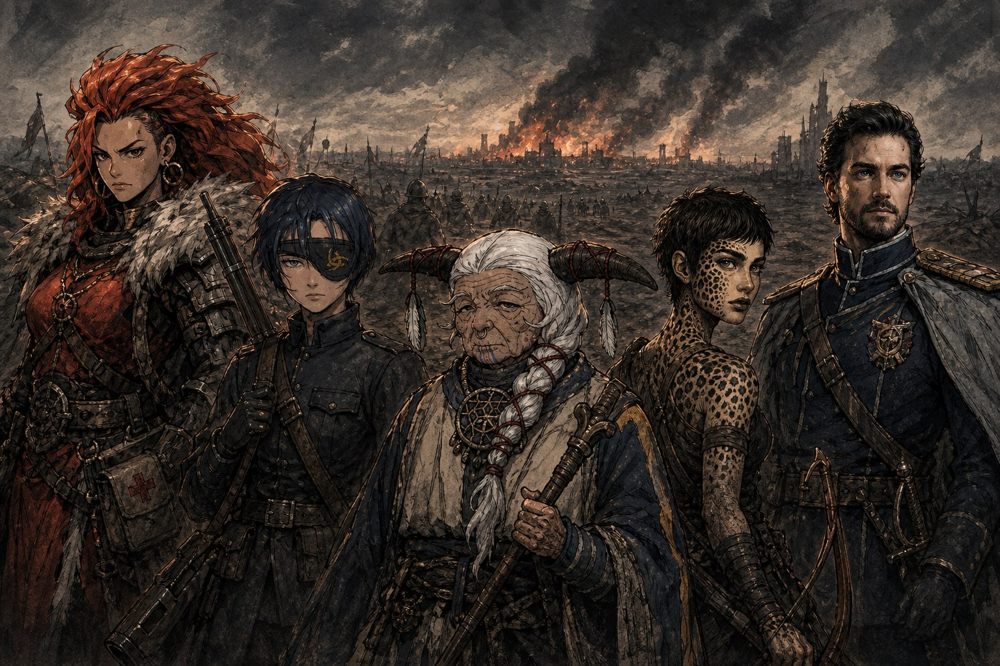

구제국력 848년, 봄. 서쪽에서 잿불의 왕이 언데드 군세를 몰고 온 지 십 년, 인류의 나라들은 하나둘 잿더미가 되었다. 마지막까지 버티던 동부 연합군마저 잇따른 전투에서 다섯 사도를 잃었다. 죽어서가 아니라 타락해서였다. 신의 힘을 받아 군단에서 가장 강했던 이들이 한꺼번에 아군에게 칼끝을 돌렸고, 에텐마크 평원의 대패로 군단은 전멸 직전까지 몰렸다. 수천이던 병력은 수십으로 줄었고, 물러설 땅은 자꾸만 좁아졌다. 그 꺼져가는 전선에, 아무도 이름을 알지 못하는 예언자 하나가 나타났다. 피어라 불리는, 세상의 감춰진 것을 들여다본다는 사도였다.
다섯 사람
무너져가는 군단에도 아직 제 몫을 다하는 이들이 있었다. 특수병이라 불리는 다섯 사람이 그러했다. 붉은 발티야는 타오르는 붉은 머리의 제먀인 의무병이었다. 사람을 살리는 자리에 어울리지 않을 만큼 우람한 몸에 성정은 불같았지만, 그 속은 티 없이 맑았다. 바론 트레버는 이제 막 성인이 된 열여섯의 오르인 저격수로, 눈에 띄는 미모로 사람을 홀리고도 남았으나 정작 본인은 오직 최고의 저격수가 되기만을 바라 연금술로 제 눈까지 갈아 끼울 만큼 고집스러웠다. 어릴 적 그를 거두어준 것은 당시 군단의 사령관이던 로프리오 후작이었다. 산호빛 거둔 들판은 버팔로의 뿔을 인 일흔둘의 파냐인 중전사였다. 평소엔 누구든 품어주는 인자한 노인이었지만, 전장에서는 지팡이로 적의 머리를 내리치는 데 조금도 망설임이 없었다.
은빛 사붓한 바람은 열아홉의 척후병이었다. 친절한 파냐 사람들 손에서 자란 고아인지라 제 것과 남의 것을 가리는 마음이 옅어 물건을 훔치다 걸린 적도 있었으나, 그 일을 뉘우치고 뜻있는 일을 찾아 군단에 들었다. 잠입과 교란에 능하고, 사람 사이의 정에는 서늘하리만치 담백한 사람이었다. 공교롭게도 그를 거둔 고아원은 산호빛 거둔 들판이 아이들을 품던 바로 그 집이었다. 도베르트 다 사니치는 서른 줄에 접어든 오르인 장교였다. 군인을 여럿 낸 가문 출신답게 사격과 전술에 밝았고, 아내와 세 아이를 둔 가장이었다. 낙하산이라는 뒷말에도 아랑곳 않는 자부심이 있었으나, 전략을 위해 병사를 버려야 하는 결정 앞에서는 남몰래 스트레스로 새치가 늘어가는, 그런 사람이기도 했다.
예언자를 사도로
군단은 함께 싸울 사도를 정해야 했다. 앞에 놓인 길은 넷이었다. 군세를 부리는 슈레야, 신비와 속임수에 능한 뿔 달린 자, 장대한 전투를 이끄는 조라, 그리고 세계의 정체를 파헤친다는 예언자 피어. 논의는 슈레야와 뿔 달린 자를 두고 뜨거웠으나, 군단이 끝내 손을 내민 것은 피어였다. 절반에 가까운 뜻이 그에게 모였다. 피어는 칼로 앞장서는 사도가 아니었다. 그의 힘은 남들이 보지 못하는 것을 보는 데 있었고, 그렇기에 군단은 이 전쟁의 끝에 무엇이 있는지를 그를 통해 알고 싶어 했다. 그렇게 군단은 예언자를 제 사도로 맞이했다.
그날 밤, 다섯 명의 플레이어가 처음 한자리에 모였다. 세계와 규칙을 익히고 네 시간에 걸쳐 이 다섯 특수병을 빚어내는 동안, 마스터는 몇 번이고 일러두었다. “괜찮아요, 금방 죽어요.” “괜찮아요, 어차피 죽을 거예요.” 잿불 속의 군단은 사람이 쉬이 죽는 이야기였다. 아직 총성 한 발 울리지 않았고 임무도 시작되지 않았지만, 이 다섯에게 정을 붙이지 말라는 경고만은 첫날부터 분명했다. 물론, 아무도 그 말을 듣지 않았다.